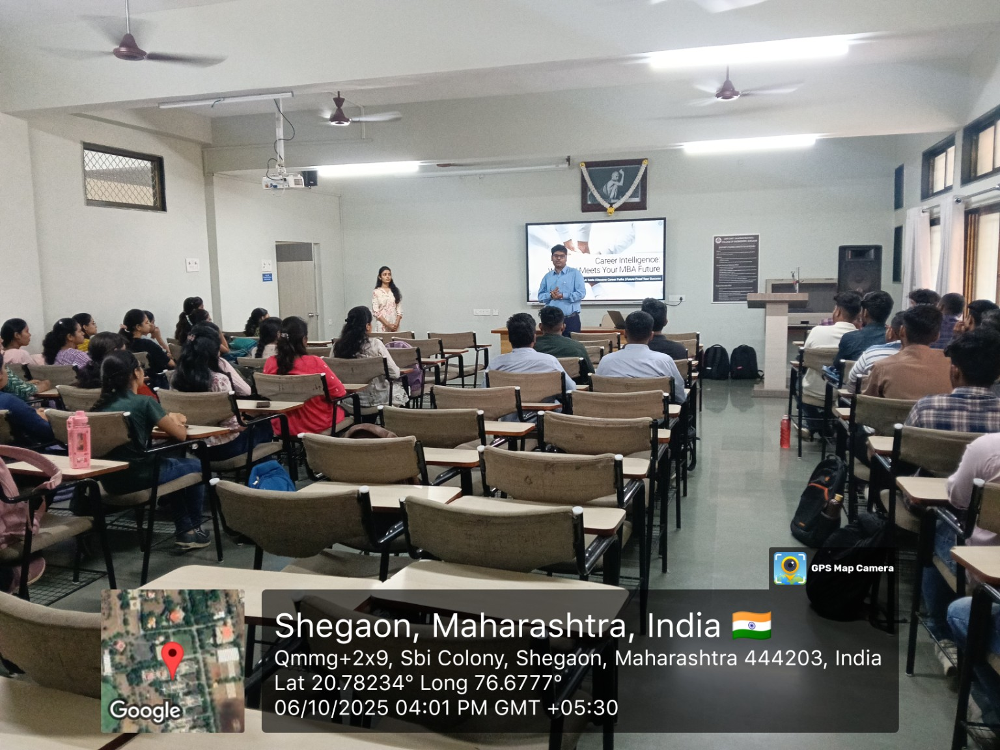
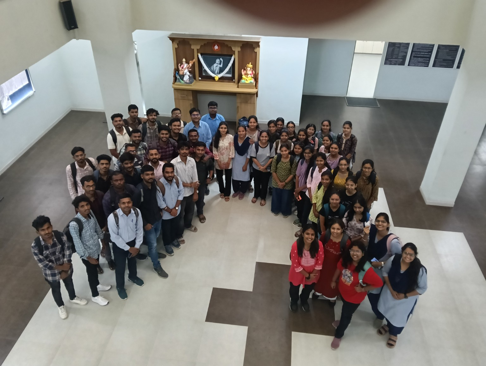
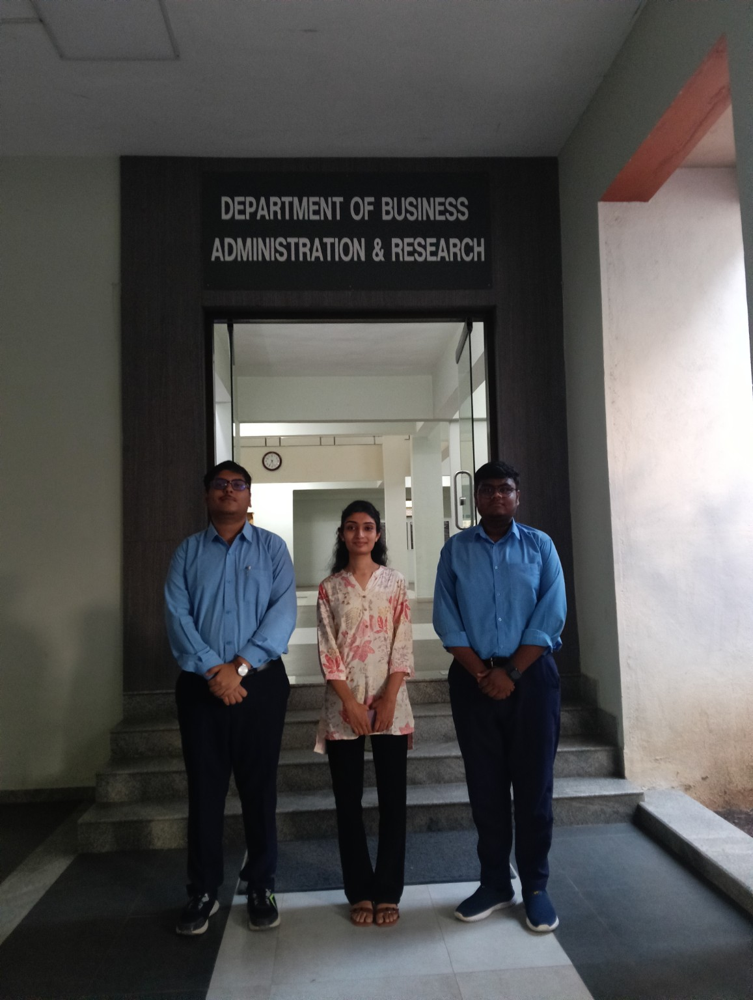
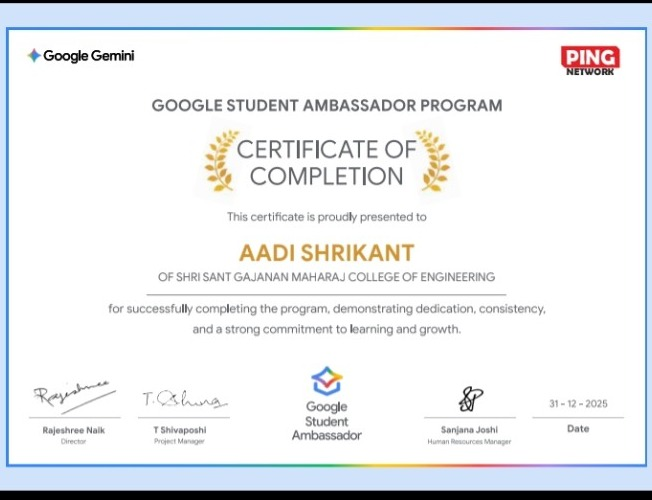
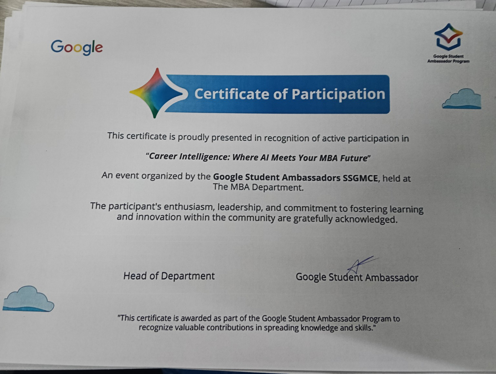
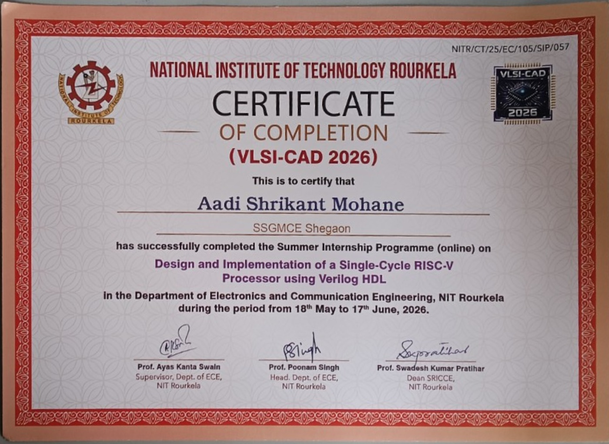

Xilinx Vivado
FPGA workflows, simulation and timing analysis exposure.
VLSI / DIGITALHELLO, I'M
Third-year engineering student interested in VLSI, semiconductor technology, FPGA systems and core electronics. I enjoy solving problems and learning how hardware works—from digital logic to physical implementation.
01 / PROFILE
I am an Electronics and Telecommunication Engineering student at Shri Sant Gajanan Maharaj College of Engineering, Shegaon.
My interests centre on VLSI and semiconductor technology, with practical exposure to FPGA-based digital design, EDA tools and embedded hardware. I like understanding how systems work, testing ideas and working through technical problems with a hands-on approach.
My learning so far has taken me through VLSI training at NIT Rourkela and a collaborative embedded-systems project. Each experience has helped me connect classroom concepts with engineering workflows.
Download résumé ↓02 / TOOLKIT
Explore the areas below. Skill tags describe tools and topics I have encountered; they are not proficiency ratings.
FPGA workflows, simulation and timing analysis exposure.
VLSI / DIGITALExposure to Genus, Innovus, Virtuoso and related tools during training.
VLSI / DIGITALMicrocontroller-based project work and hardware integration.
EMBEDDEDTemperature, humidity and soil-moisture sensor connections.
HARDWAREPractical exposure to relay operation and control connections.
HARDWARESchematic interpretation and introductory PCB layout exposure.
CIRCUIT DESIGNBasic scripting fundamentals.
PROGRAMMINGBasic engineering software exposure.
ENGINEERINGBasic database query knowledge.
DATA03 / SELECTED WORK
A closer look at two technical experiences, with contributions and limitations stated clearly.
NIT ROURKELA · TECHNICAL TRAINING
FPGA-based digital design and analysis
Participated in a VLSI training project centred on a GCD processor. The training involved simulation analysis, timing analysis and testing multiple input combinations, alongside exposure to FPGA platforms and the digital implementation toolchain.
The RTL/code was provided during the training. This entry focuses on analysis, testing and tool exposure rather than independent RTL authorship or chip fabrication.
TEAM PROJECT · 4 MEMBERS
Local sensor-based monitoring and control
Collaborated in a four-member team to assemble and demonstrate a functional prototype for monitoring environmental conditions relevant to seed germination, using an Arduino Mega and local sensor-based monitoring.
The Arduino code was supplied for the project with ChatGPT assistance. Monitoring was local; cloud connectivity and remote monitoring were not implemented.
04 / EXPERIENCE
CAMPUS ENGAGEMENT & OUTREACH
Contributed to campus technology awareness and student engagement at SSGMCE.



05 / CREDENTIALS
Selected certificates and recognition connected to my learning and campus engagement.

Certificate of Completion

Certificate of Participation

Summer Internship Programme: Design and Implementation of a Single-Cycle RISC-V Processor using Verilog HDL
06 / DIRECTION
I aim to deepen my understanding of VLSI design, digital systems, FPGA implementation and hardware verification while growing through practical engineering experience.
07 / CONTACT
For technical opportunities, collaboration or conversations around electronics and semiconductor technology.